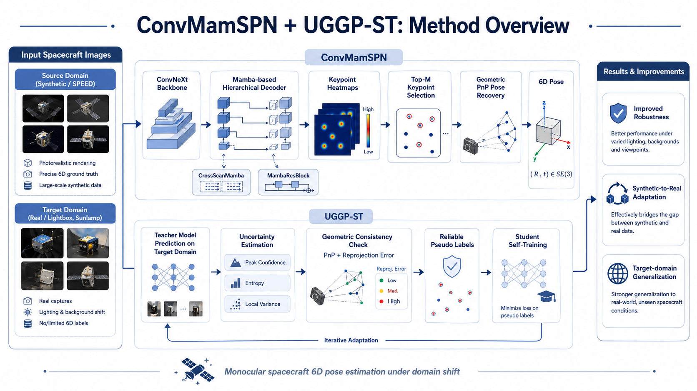

01
Mamba-based Pose Network
ConvMamSPN combines a ConvNeXt visual backbone with a Mamba-based hierarchical decoder for accurate spacecraft keypoint heatmap prediction.
Uncertainty-Guided Geometric Pseudo-label Self-Training for Monocular Non-cooperative Spacecraft Pose Estimation with ConvMamSPN
Computer Vision · Space Intelligent Perception · Spacecraft Pose Estimation

ConvMamSPN combines a ConvNeXt visual backbone with a Mamba-based hierarchical decoder for accurate spacecraft keypoint heatmap prediction.
CrossScanMamba enhances long-range spatial dependency modeling by scanning feature maps across complementary directions.
Predicted 2D keypoints are combined with predefined 3D keypoints, and the 6D pose is recovered through PnP-based geometric solving.
UGGP-ST filters pseudo labels using heatmap uncertainty and PnP reprojection consistency to reduce noisy target-domain supervision.
Spacecraft 6D pose estimation is a fundamental task for non-cooperative space target perception, autonomous rendezvous, and on-orbit servicing. However, spacecraft images often suffer from weak textures, large scale variation, complex illumination, and significant synthetic-to-real domain gaps. To address these challenges, we propose ConvMamSPN, a Mamba-based keypoint pose estimation network, and UGGP-ST, an uncertainty-guided geometric pseudo-label self-training framework.
ConvMamSPN predicts spacecraft keypoint heatmaps using a ConvNeXt backbone and a Mamba-based hierarchical decoder. The final 6D pose is recovered using geometric PnP. UGGP-ST further improves target-domain robustness by selecting reliable pseudo labels through keypoint uncertainty estimation and PnP reprojection consistency, enabling effective teacher-student self-training on unlabeled real-domain images.
The framework integrates network-based keypoint localization, geometry-based pose recovery, and uncertainty-guided target-domain adaptation.
ConvMamSPN is an encoder-decoder network for monocular spacecraft 6D pose estimation. It extracts hierarchical visual features with a ConvNeXt backbone and refines multi-scale decoder features with CrossScanMamba and MambaResBlock modules. The network outputs keypoint heatmaps, from which high-confidence 2D keypoints are selected for geometric PnP pose recovery.
UGGP-ST addresses the synthetic-to-real domain gap by generating and selecting reliable pseudo labels from unlabeled target-domain images. Instead of relying only on heatmap peak confidence, it jointly considers heatmap uncertainty and PnP reprojection consistency, reducing error accumulation during teacher-student self-training.

Qualitative predictions are shown across SPEED, SPEED+ Synthetic, Lightbox, and Sunlamp domains. Each card independently rotates examples to illustrate robustness under synthetic-to-real appearance shifts.
| Model | Params(M) ↓ | FLOPs(G) ↓ | Lightbox Ascore ↓ |
Sunlamp Ascore ↓ |
Synthetic Ascore ↓ |
|---|---|---|---|---|---|
| VPU | 190.07 | 273.36 | 0.1014 | 0.0612 | 0.039 |
| SPNv2 | 56.92 | 142.54 | 0.122 | 0.198 | – |
| laval1302 | – | – | 0.1627 | 0.0545 | 0.04 |
| KPN | – | – | 0.810 | 1.320 | – |
| SPTN | – | – | 0.098 | 0.156 | – |
| TSTF | – | – | 0.095 | 0.197 | – |
| PVSPE | 73.09 | 104.12 | 0.101 | 0.178 | – |
| PVSAR | 30.60 | – | 0.076 | 0.112 | – |
| SPNv3-S† | 22.70 | – | 0.064 | 0.088 | – |
| SPNv3-M† | 39.60 | – | 0.056 | 0.082 | – |
| SPNv3-B† | 86.30 | – | 0.047 | 0.074 | – |
| ConvMamSPN + UGGP-ST Ours | 13.97 | 23.87 | 0.0297 | 0.0465 | 0.0121 |
† denotes results reported with an ensemble of heatmap predictions from models trained in three independent sessions, following the original paper. Best results are shown in bold, and second-best results are underlined.
@article{TODO,
title = {TODO},
author = {TODO},
journal = {TODO},
year = {2026}
}